equações
linearmente independentes:
equações
linearmente independentes:
Dado um conjunto de 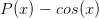 pontos 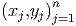 tais que 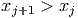, ou seja, as abscissas são distintas e estão em ordem crescente; um spline cúbico que interpola estes pontos é uma função 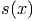 com as seguintes propriedades:
Da primeira hipótese, escrevemos
Veremos que a simples definição de spline produz equações
linearmente independentes:
 |
Como
 | (6.1) |
e
 | (6.2) |
temos, para  , as seguintes equações
, as seguintes equações
 |
Por simplicidade, definimos

 | (6.3) |
que podem ser escrita da seguinte maneira
 | (6.4) |
 | (6.5) |
 | (6.6) |
Trocando o índice  por
por  na terceira equação (6.3),
na terceira equação (6.3), 
 | (6.7) |
e, portanto,
 | (6.8) |
Fazendo as simplificações, obtemos:
 | (6.9) |
É costumeiro acrescentar a incógnita  ao sistema. A incógnita
ao sistema. A incógnita  não está
relacionada a nenhum dos polinômios interpoladores. Ela é uma construção
artificial que facilita o cálculo dos coeficientes do spline. Portanto, a equação
acima pode ser resolvida para
não está
relacionada a nenhum dos polinômios interpoladores. Ela é uma construção
artificial que facilita o cálculo dos coeficientes do spline. Portanto, a equação
acima pode ser resolvida para  .
.
Para determinar unicamente os  coeficientes
coeficientes  precisamos acrescentar
duas equações linearmente independentes às
precisamos acrescentar
duas equações linearmente independentes às  equações dadas por (6.9).
Essas duas equações adicionais definem o tipo de spline usado.
equações dadas por (6.9).
Essas duas equações adicionais definem o tipo de spline usado.
Uma forma de definir as duas equações adicionais para completar o sistema (6.9) é impor condições de fronteira livres (ou naturais), ou seja,
 | (6.10) |
Substituindo na equação (6.2)


 e
e  juntamente com as equações (6.9) formam um
sistema de
juntamente com as equações (6.9) formam um
sistema de  equações
equações  , onde
, onde
 | (6.11) |
 | (6.12) |
Observe que a matriz  é diagonal dominante estrita e, portanto, o
sistema
é diagonal dominante estrita e, portanto, o
sistema  possui solução única. Calculado
possui solução única. Calculado  , os valores dos
, os valores dos  ,
,
 e
e  são obtidos diretamente pelas expressões (6.4), (6.6) e (6.5),
respectivamente.
são obtidos diretamente pelas expressões (6.4), (6.6) e (6.5),
respectivamente.
Solução. O spline desejado é uma função definida por partes da forma:
 | (6.13) |
Os coeficientes  ,
,  e
e  resolvem o sistema
resolvem o sistema  , onde
, onde
 |
 |
Observe que  é um coeficiente artificial para o problema. A solução é
é um coeficiente artificial para o problema. A solução é  ,
,
 ,
,  e
e  . Calculamos os demais coeficientes usando as
expressões (6.4), (6.6) e (6.5):
. Calculamos os demais coeficientes usando as
expressões (6.4), (6.6) e (6.5):


 |
No Scilab, podemos utilizar:

Alternativamente, para completar o sistema (6.9), podemos impor condições de contorno fixadas, ou seja,

 | (6.14) |
e
|
| (6.15) |
Usando as equações (6.5) e (6.6) para 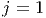 e  , temos:
, temos:
 | (6.16) |
e
 | (6.17) |
Essas duas equações juntamente com as equações (6.9) formam um sistema de
 equações
equações  , onde
, onde
 |
 |
Observe que a matriz  é diagonal dominante estrita e, portanto, o
sistema
é diagonal dominante estrita e, portanto, o
sistema  possui solução única. Calculado
possui solução única. Calculado  , os valores dos
, os valores dos  ,
,
 e
e  são obtidos diretamente pelas expressões (6.4), (6.6) e (6.5),
respectivamente.
são obtidos diretamente pelas expressões (6.4), (6.6) e (6.5),
respectivamente.
Exemplo 6.6.2. Construa um spline cúbico com fronteira fixada que
interpola a função  nos pontos
nos pontos  , 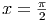, 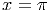,
, 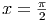, 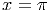,  e
e  .
.
O spline desejado passa pelos pontos  ,
,  ,
,  ,
,  e
e
 e tem a forma:
e tem a forma:
 |
Observe que ele satisfaz as condição de contorno  e
e
 .
.
Os coeficientes  ,
,  ,
,  e
e  resolvem o sistema
resolvem o sistema  , onde:
, onde:
 |
 |
Aqui  é um coeficiente artificial para o problema. A solução é
é um coeficiente artificial para o problema. A solução é  ,
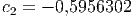, 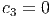,
,
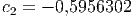, 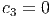,  e
e  . Calculamos os
demais coeficientes usando as expressões (6.4), (6.6) e (6.5):
. Calculamos os
demais coeficientes usando as expressões (6.4), (6.6) e (6.5):


![(
<<<<<<< HEAD
|| x- 0,049x2 - 0,12x3 ,0 ≤ x < π
|||| 2
|{ 1+ - 0,01 (x - π2 )- 0,6(x - π2 )2 + 0,13 (x - π2 )3 , π2 ≤ x < π
S(x) = | 3 3π
|||| - 0,95(x- π )+ 0,13(x- π ) ,π ≤ x < 2
||( - 1 - 0,01 (x - 3π) + 0,6(x - 3π)2 - 0,12(x - 3π)3 , 3π≤ x ≤ 2 π
2 2 2 2
=======
|| x - 0,049x2 - 0,12x3 ,0 ≤ x < π
|||| 2
|{ 1 + - 0,01(x - π2) - 0,6(x - π2)2 + 0,13(x - π2)3 , π2 ≤ x < π
S(x) = | 3 3π-
|||| - 0,95(x- π )+ 0,13(x - π) ,π ≤ x < 2
||( - 1 - 0,01(x - 3π)+ 0,6(x - 3π)2 - 0,12(x- 3π)3 , 3π-≤ x ≤ 2π
2 2 2 2
>>>>>>> 62bea6a0d0a1d3eca740d93a452697554da972de](main3071x.png) |
No Scilab, podemos resolver este problema fazendo:
Dado um conjunto de pontos  ,
,  , um spline cúbico é a
seguinte função interpoladora definida por partes:
, um spline cúbico é a
seguinte função interpoladora definida por partes:
 |
Definindo-se  , os coeficientes
, os coeficientes  ,
,  , são solução
do sistema linear
, são solução
do sistema linear  , onde:
, onde:
![|--------------------------------------|--------------------------------------|
|Spline Natural |Spline Fixado |
| ′′ ′′ | ′ ′ ′ ′ |
|s1(x1) =(-0-e-sn-1(xn) =-0-------------|s1(x1) =(-f-(x1)-e sn-1(xn)-=-f-(xn)---|
| || 1 ,j = i = 1 | || 2h ,j = i = 1 |
| |||| | |||| 1 |
| |||| hi-1 ,j = i- 1,i < n | |||| hi-1 ,j = i- 1 |
| |||| | |||| |
| { 2(hi + hi-1) ,j = i,1 < i < n | { 2(hi + hi- 1) ,j = i,1 < i < n |
|ai,j = || |ai,j = || |
| |||| hi ,j = i+ 1,i > 1 | |||| hi ,j = i+ 1 |
| |||| 1 ,j = i = n | |||| 2hn -1 ,j = i = n |
| |||| | |||| |
| ( 0 ,caso contrário. | ( 0 ,caso contrário. |
| | |
| ( | ( |
| ||| 0 ,i = 1 | ||| 3y2-y1- 3f′(x1) ,i = 1 |
| |{ | |{ h1 |
|zi = | 3yi+1h-i-yi - 3yi-hiyi--11 ,1 < i < n |zi = | 3yi+h1i-yi- 3yih-iy-i-11 ,1 < i < n |
| |||( | |||( ′ yn--yn-1- |
--------0------------------,i =-n--------------3f-(xn)--3--hn-1---,i-=-n-------](main3079x.png) |
os coeficientes  ,
,  e
e  , 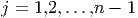, são calculados conforme segue:
, 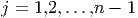, são calculados conforme segue:

 ,
,  ,
,  e
e  .
.